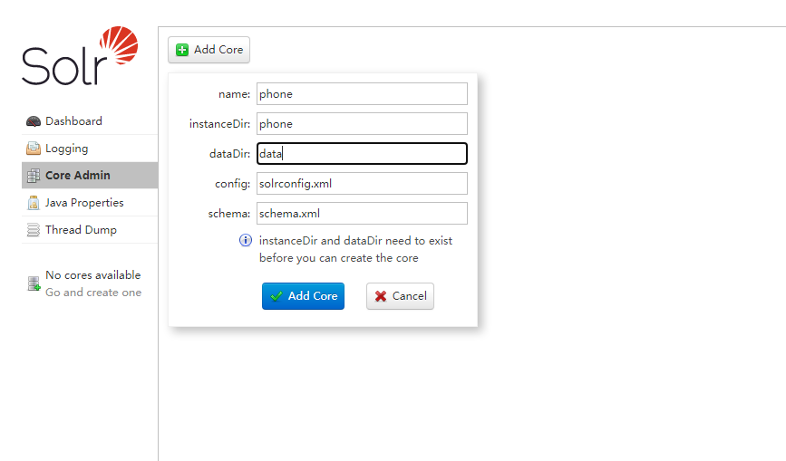
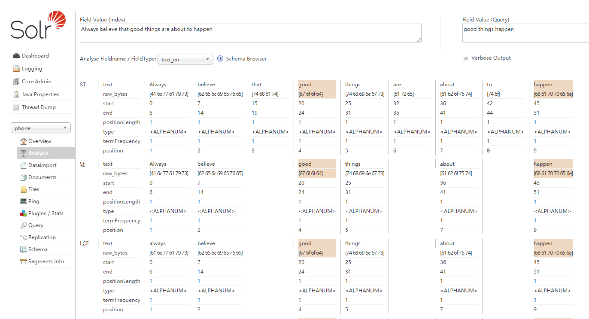
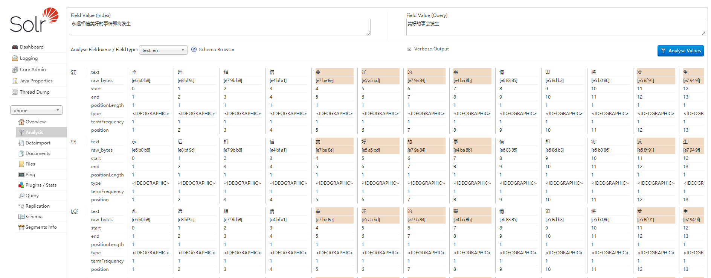
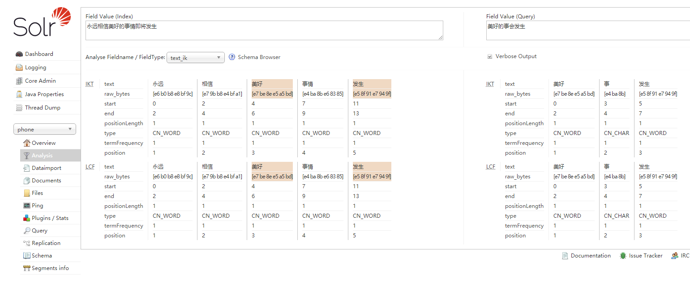
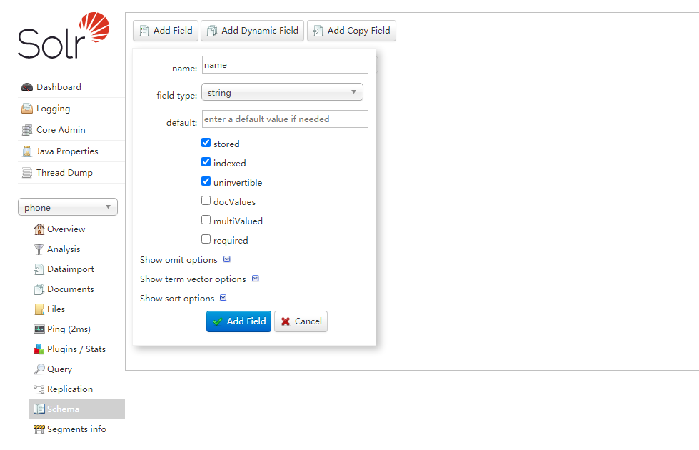
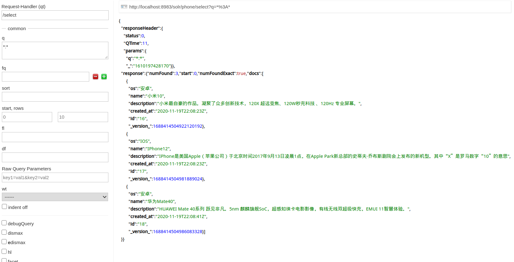

版本：Solr 8
简介
现实生活中我们都知道大多数网站或应用都必须具有某种搜索功能，问题是搜索功能往往是巨大的资源消耗并且它们由于沉重的数据库加载而拖垮你的应用的性能。在项目开发过程中为了提高查询效率和降低数据库的压力，因此就将查询量大的数据放到Solr中。
- Solr是一个高性能，采用Java开发，基于Lucene的全文搜索服务器。同时对其进行了扩展，提供了比Lucene更为丰富的查询语言，同时实现了可配置、可扩展并对查询性能进行了优化，并且提供了一个完善的功能管理界面，是一款非常优秀的全文搜索引擎。
- Solr可以和Hadoop一起使用。由于Hadoop处理大量数据，Solr帮助我们从这么大的源中找到所需的信息。不仅限于搜索，Solr也可以用于存储目的。像其他NoSQL数据库一样，它是一种非关系数据存储和处理技术。
- Solr本身也可以看成数据库,(NoSql类型),但它比数据库搜索速度更快,所以在项目中我们一般把搜索的部分交给Solr。
- 数据库本身不能实现分词效果,而只能使用模糊查询,但是模糊查询非常低效,查询速度比较慢,由于在实际生活中,一般搜索是用的比较多的,这样数据库压力自然就很大,所以我们就让供专业的solr来做搜索功能
安装
Win/Linux/Mac都可从官网下载Solr的Jar包:Apache Solr，也可用Docker一键部署:docker pull solr:8.7.0docker run --name solr -p 8983:8983 -t solr
解压，配置$SOLR_HOME环境变量（可选）。如果配置了$SOLR_HOME，就需要在$SOLR_HOME下配置默认的solr.xml:<solr>
<solrcloud>
<str name="host">${host:}</str>
<int name="hostPort">${jetty.port:8983}</int>
<str name="hostContext">${hostContext:solr}</str>
<int name="zkClientTimeout">${zkClientTimeout:15000}</int>
<bool name="genericCoreNodeNames">${genericCoreNodeNames:true}</bool>
</solrcloud>
<shardHandlerFactory name="shardHandlerFactory"
class="HttpShardHandlerFactory">
<int name="socketTimeout">${socketTimeout:0}</int>
<int name="connTimeout">${connTimeout:0}</int>
</shardHandlerFactory>
</solr>
Solr 内置了 Jetty，所以不需要任何安装任何Web容器即可运行。直接通过命令行就可以启动。
进入$SOLR_HOME/bin目录，./solr start，默认端口8983，浏览器输入localhost:8983界面如下：
Solr启动可以启动多个服务，对应多个端口，启动默认端口是8983，关闭和重启则需要指定端口
- 启动：
solr start -p <port> - 关闭：
solr stop -p <port> - 重启：
solr restart -p <port>
DIH数据导入
接下来介绍一个从MySQL导入手机相关数据到Solr的例子:
数据准备
创建一张MySQL表，描述手机的信息：DROP TABLE IF EXISTS `phone`;
CREATE TABLE `phone` (
`id` INT NOT NULL AUTO_INCREMENT,
`name` VARCHAR(50) DEFAULT NULL,
`description` VARCHAR(255) DEFAULT NULL,
`os` VARCHAR(10) DEFAULT NULL,
`created_at` timestamp NOT NULL DEFAULT CURRENT_TIMESTAMP ON UPDATE CURRENT_TIMESTAMP,
PRIMARY KEY (`id`)
) ENGINE=InnoDB AUTO_INCREMENT=16 DEFAULT CHARSET=utf8;
SET FOREIGN_KEY_CHECKS = 1;
插入几条数据：INSERT INTO `phone` (`name`,`description`,`os`) values ("小米10","小米最自豪的作品。凝聚了众多创新技术，120X 超远变焦、120W秒充科技 、120Hz 专业屏幕。","安卓");
INSERT INTO `phone` (`name`,`description`,`os`) values ("IPhone12","IPhone是美国Apple（苹果公司）于北京时间2017年9月13日凌晨1点，在Apple Park新总部的史蒂夫·乔布斯剧院会上发布的新机型。其中“X”是罗马数字“10”的意思","IOS");
INSERT INTO `phone` (`name`,`description`,`os`) values ("华为Mate40","HUAWEI Mate 40系列 跃见非凡。5nm 麒麟旗舰SoC，超感知徕卡电影影像，有线无线双超级快充，EMUI 11智慧体验。","安卓");
创建Core
在Solr中创建一个名为phone的Core，在Solr中一个Core就类似一张数据表。
首先在server/solr创建一个名为phone的文件夹，然后把本目录下configsets中提供的配置模板复制过去：cp -r ./configsets/_default/conf/ ./phone/。
然后在网页中创建Core：

创建完后，server/solr下phone文件夹目录结构如下：- phone/
- core.properties
- conf/
- solrconfig.xml
- managed-schema
- data/
其中conf/中存放该Core的配置，data/中存放数据。
点击左侧出现的Core Selector即可选择刚刚创建的Core
配置依赖
在solrconfig.xml写入以下依赖<lib dir="${solr.install.dir:../../../..}/dist/" regex="ik-analyzer-\d.*\.jar" />
<lib dir="${solr.install.dir:../../../..}/dist/" regex="mysql-connector-java-\d.*\.jar" />
<lib dir="${solr.install.dir:../../../..}/dist/" regex="solr-dataimporthandler-\d.*\.jar" />
mysql-connector-java
配置Schema
managed-schema文件中主要有三种标签:
dynamicFieldfieldTypefield
其中fieldType对应的是字段的类型，field对应的是字段。
fieldType会指定字段的分词器，我们现在点击左侧的Analysis查看分词效果。选择text_en类型，输入一句话：Always believe that good things are about to happen，分词效果如下：

这是英文的分词效果，按照空格分词，比较简单。但是如果用中文：永远相信美好的事情即将发生，效果会很差，变成了一个字一个词：

这说明text_en这种分词器不适合中文分词的场景，中文分词推荐使用IkAnalyzer。于是我们自己定义一个fieldType叫text_ik，指定它的分词器为org.wltea.analyzer.lucene.IKTokenizerFactory。在solrconfig.xml中导入依赖包:<lib dir="${solr.install.dir:../../../..}/dist/" regex="ik-analyzer-solr8-\d.*\.jar" />（下载地址），在managed-schema中加入text_cn的定义:<fieldType name="text_ik" class="solr.TextField">
<analyzer type="index">
<tokenizer class="org.wltea.analyzer.lucene.IKTokenizerFactory" conf="ik.conf" useSmart="false"/>
<filter class="solr.LowerCaseFilterFactory"/>
</analyzer>
<analyzer type="query">
<tokenizer class="org.wltea.analyzer.lucene.IKTokenizerFactory" conf="ik.conf" useSmart="true"/>
<filter class="solr.LowerCaseFilterFactory"/>
</analyzer>
</fieldType>
保存然后reload Core，再次进入Analysis模块，已经出现text_ik类型，分词效果如下：

新版的Solr推荐用网页端直接设置字段：

配置完成后field应包含如下字段：<field name="id" type="string" multiValued="false" indexed="true" required="true" stored="true"/>
<field name="created_at" type="pdates" uninvertible="true" indexed="true" stored="true"/>
<field name="description" type="text_ik" uninvertible="true" indexed="true" stored="true"/>
<field name="name" type="text_ik" uninvertible="true" indexed="true" stored="true"/>
<field name="os" type="string" uninvertible="true" indexed="true" stored="true"/>
其中name和description被设置为text_ik类型，方便后续分词与检索。
配置db-data-config.xml
在solrconfig.xml同级目录下，创建一个db-data-config.xml文件，写入MySQL导入数据的配置：
<dataConfig>
<dataSource name="db" type="JdbcDataSource" driver="com.mysql.jdbc.Driver" url="jdbc:mysql://localhost:3306/test?useUnicode=true&useJDBCCompliantTimezoneShift=true&useLegacyDatetimeCode=false&serverTimezone=UTC" user="root" password="root" />
<document>
<entity name="phone" dataSource="db" transformer="DateFormatTransformer" pk="id"
query="SELECT * FROM phone"
deltaQuery="SELECT id FROM phone WHERE created_at > '${dataimporter.last_index_time}'"
>
<field column="id" name="id"/>
<field column="name" name="name"/>
<fiele column="os" name="os"/>
<field column="description" name="description"/>
<field column="created_at" name="created_at" dateTimeFormat="yyyy-MM-dd HH:mm:ss"/>
</entity>
</document>
</dataConfig>
配置requestHandler
在solrconfig.xml配置文件中引入db-data-config.xml文件<requestHandler name="/dataimport" class="org.apache.solr.handler.dataimport.DataImportHandler">
<lst name="defaults">
<str name="config">db-data-config.xml</str>
</lst>
</requestHandler>
保存然后reload core，进入Dataimport模块，选择full-import，点击Excute导入数据。然后进入到Query中查找即可。

上述数据导入是走的Data Import Handler，简称DIH。这种方式会遍历数据库，根据创建时间进行增量导入或者全量导入，导入时会检查主键(ID)字段是否存在，选择覆盖或创建一条文档(doc)。这种导入需要在mysql导入完后调用/dataimport接口，异步导入数据。当有数据同步性需求时（如必须对solr中一条数据的创建时间可控），可以选择用/update接口直接导入。
通过/update接口导入
Solr的操作都可以通过他提供的HTTP接口完成，所以可以通过/update接口直接同步导入，而Java中提供了对HTTP接口的封装模块SolrJ。创建maven项目，到日pom依赖： <dependency>
<groupId>org.apache.solr</groupId>
<artifactId>solr-solrj</artifactId>
<version>7.2.1</version>
</dependency>
Java中创建一条新的记录：String SOLR_URL = "http://localhost:8983/solr/phone";
SolrClient client = new HttpSolrClient.Builder(SOLR_URL).withConnectionTimeout(10000).withSocketTimeout(60000).build();
SolrInputDocument document = new SolrInputDocument();
document.setField("os","安卓");
document.setField("name","小米11");
document.setField("description","方方面面的新突破，开启了 2021 年高端旗舰的新标准。它轻薄、出彩 - 带来一块创下 13 项纪录的高端屏幕。" +
"更快的速度、更强大的影像系统，以及全面飞跃的视听体验。" +
"种种突破，共同成就了这款 2021 年小米高端代表作，助你轻装上阵，一往无前。");
document.setField("created_at",new Date());
document.setField("id",19);
client.add(document);
client.commit();
当要删除时，可以调用/delete接口，也可直接用SolrJ的API。client.deleteByQuery("*:*")表示删除全部。无论提交还是删除，都需要调用client.commit()生效:client.deleteByQuery("*:*");
client.commit();